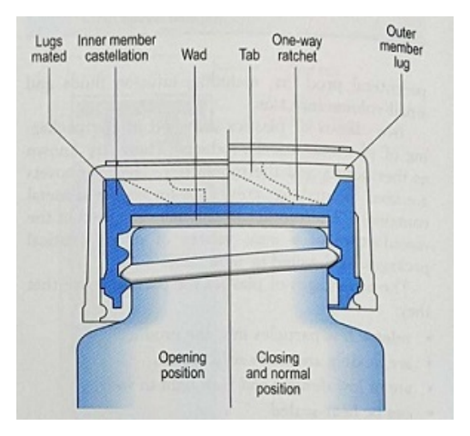

開卷有益 ／
藥師 ／ 調劑學與臨床藥學 ／ 111 年第 2 次111 年第 2 次藥師調劑學與臨床藥學試題與答案
這一頁是民國 111 年第 2 次藥師調劑學與臨床藥學的整份歷屆試題，共 80 題，題目與標準答案出自考選部「國家考試試題及測驗式試題答案」開放資料，其中 78 題附有詳解。以下逐題列出題幹、選項與答案；要計時作答或記錄成績，請用線上練習。
考選部原始場次代碼：111100
線上作答這一科 →
全部 80 題
第 1 題
Calcium chloride inj.（diluted in normal saline）4 mg/mL與sodium bicarbonate inj. 1 mEq/mL經由Y-site給藥時，會 發生何種配伍禁忌？
（A） 物理性（physical）（B） 化學性（chemical）（C） 治療性（therapeutic）（D） 吸收性（absorption）答案：（A）
詳解與考點 正解：calcium chloride 與 sodium bicarbonate 在 Y-site 接觸時，鈣離子可形成難溶性鈣鹽，使輸液出現混濁或沉澱。可見的相態改變是物理性配伍禁忌的典型表現，故選 A。
B：化學性配伍禁忌著重藥物分解、氧化或水解等造成效價改變。本題最直接可辨識的是混合後的沉澱，不是以效價降解為判準。
C：治療性配伍禁忌是兩種藥在病人身上產生不利的藥理或治療效果，並非同一輸液管路混合後的可見相容性問題。
D：吸收性配伍禁忌涉及腸胃道吸收或其他進入體內過程的改變；Y-site 靜脈混合時沒有吸收步驟可供判斷。
本題考點：Y-site 配伍性（Y-site compatibility）——兩種靜脈製劑共用管路前，要先判斷接觸後是否產生沉澱、變色或混濁；物理性配伍禁忌（physical incompatibility）——出現可見相態改變時，優先歸入物理性不相容。
第 2 題
下列何者不屬於多醣類乳化劑（emulsifying agent）？
（A） acacia（B） beeswax（C） tragacanth（D） starch答案：（B）
詳解與考點 正解：本題要按乳化劑的化學來源辨認。beeswax 主要是蠟質脂類與酯類的混合物，不是多醣類，故選 B。
A：acacia 是植物膠質，主要成分為多醣，可藉親水膠體特性穩定乳劑，符合多醣類乳化劑。
C：tragacanth 也是植物來源的多醣膠質，能提高連續相黏度並協助乳化，故不符合題目所問的不屬於者。
D：starch 的化學本質是多醣；在此分類下應與植物膠質類一併判為多醣來源，不是排除項。
本題考點：乳化劑分類（emulsifying agent classification）——題目以化學來源分類時，先分辨植物膠質的多醣與蠟、脂質等非多醣成分；親水膠體乳化（hydrophilic colloid emulsification）——多醣膠質藉增加水相黏度與界面保護來提升乳劑安定性。
第 3 題
下列何者不做為液體劑型之抗菌防腐劑？
（A） benzalkonium chloride（B） chlorobutanol（C） hydroquinone（D） methyl paraben答案：（C）
詳解與考點 正解：液體劑型的抗菌防腐劑目的是抑制微生物生長。hydroquinone 在製劑中主要用作抗氧化劑，以減少氧化造成的變色或降解，並非抗菌防腐劑，故選 C。
A：benzalkonium chloride 具有抗菌作用，是液體製劑常見的防腐劑類型。
B：chlorobutanol 可用於液體製劑的防腐，作用重點在抑制微生物而非防止氧化。
D：methyl paraben 屬 paraben 類防腐劑，可作為液體製劑的抗菌防腐成分。
本題考點：抗菌防腐劑（antimicrobial preservative）——判斷液體製劑添加物時，看其主要用途是否為抑制微生物；抗氧化劑（antioxidant）——若成分是為了防止氧化變質，不能因同樣延長製劑保存而誤判為防腐劑。
第 4 題
進行用藥指導時，下列做法何者最不適當？
（A） 保持視線接觸（B） 鼓勵病人多描述（C） 事先閱讀病歷（D） 避免以開放式問句開始答案：（D）
詳解與考點 正解：用藥指導開始時，開放式問句可引出病人對疾病、藥品使用方式與困難的完整描述。刻意避免以開放式問句開始會縮減可蒐集的資訊，不利於後續澄清與個別化指導，故選 D。
A：保持視線接觸能傳達專注並協助觀察非語言訊息，是建立溝通關係的適當做法。
B：鼓勵病人多描述可讓藥師辨認實際用藥行為與疑慮，符合病人中心的用藥指導。
C：事先閱讀病歷可掌握診斷、過敏史與既有用藥，讓指導內容更能對應安全性與病人需求。
本題考點：開放式問句（open-ended question）——需要蒐集病人經驗與問題時，先用可自由回答的問句取得完整脈絡；病人中心溝通（patient-centered communication）——用藥指導應先理解病人的情境，再決定要補充或修正的資訊。
第 5 題
下列處方縮寫與其代表的意義，何者錯誤？
（A） pc代表after meals（B） prn代表immediately（C） pulv代表powder（D） Sig代表write on label答案：（B）
詳解與考點 正解：處方縮寫 prn 表示依需要使用，不表示立即給藥；立即執行的概念通常以 stat 表示。故（B）將 prn 解作 immediately 錯誤，故選 B。
A：pc 為 after meals，表示飯後使用，縮寫與意義相符。
C：pulv 為 powder，指粉末劑型，縮寫與意義相符。
D：Sig 源自 signa，用於指示應寫在標籤上的用藥說明，與題述意義相符。
本題考點：處方縮寫（prescription abbreviations）——看到拉丁縮寫時，要先連結其用藥時機或調劑指示，不可只依字面相似推論；依需要使用（pro re nata, prn）——遇到 prn 時判為依症狀或需要給藥，與立即一次性給藥區分。
第 6 題
下列藥品何者最不適合使用如圖示之閉合系統（closure system）？

（A） dipyridamole/aspirin capsule（B） topiramate sprinkle capsule（C） methylphenidate tablet（D） nitroglycerin tablet答案：（D）
詳解與考點 正解：圖示為兒童防誤開瓶蓋（child-resistant closure）之標準構造，其中內襯有一片吸附性襯墊（Wad）用以密封瓶口。硝酸甘油舌下錠（nitroglycerin sublingual tablet）化學性質極不安定、易昇華揮發，且對襯墊等多孔材質有高度親和性；若裝入附有Wad的瓶蓋容器，藥效會因藥物被襯墊吸附而快速流失，因此規定須以原廠附特製金屬蓋（無襯墊、無棉花）的玻璃瓶保存，不得換裝至一般兒童防誤瓶，故D最不適合使用如圖所示之閉合系統。
A：dipyridamole/aspirin膠囊為口服固體劑型，化學性質相對穩定，可正常使用附Wad之兒童防誤瓶蓋分裝，無明顯揮發吸附疑慮。
B：topiramate sprinkle膠囊同屬穩定固體劑型，同樣適用一般兒童防誤瓶蓋，無特殊儲存限制。
C：methylphenidate錠劑屬管制藥品，需要兒童防誤包裝以降低誤食風險，但藥品本身化學性質穩定，可正常使用此類瓶蓋。
本題考點：兒童防誤瓶蓋（child-resistant closure）之構造與適用性——判準在於藥品是否會與瓶蓋襯墊（Wad）產生交互作用，而非單純看是否屬管制藥品；硝酸甘油舌下錠的特殊儲存規定——因其揮發性極高且易被多孔材質吸附，須以原包裝玻璃瓶搭配無襯墊金屬蓋保存，不得任意換裝分裝容器。
第 7 題
有關藥品包裝之標籤，下列何者屬於additional labelling requirements？
（A） expiry date（B） date of dispensing（C） quantity（D） name and address of the pharmacy答案：（A）
詳解與考點 正解：題目區分的是調劑標籤的基本資料與附加標示。expiry date 提醒病人可使用至何時，屬於 additional labelling requirements，故選 A。
B：date of dispensing 是辨識本次調劑的基本資料，並非本題所稱的附加標示。
C：quantity 用來說明實際交付的藥品數量，屬調劑標籤的基本內容。
D：name and address of the pharmacy 用以辨識提供藥品的藥局，也是基本標籤資訊。
本題考點：藥品標籤（medication labelling）——區分標籤項目時，先看它是辨識調劑來源與交付內容的基本資料，還是額外提示安全使用期限的資訊；有效期限（expiry date）——涉及可使用期間的資訊應清楚標示，避免病人於不適用期間繼續使用。
第 8 題
除了藥品包裝使用條碼（bar code）外，下列何者最能確保藥品給與正確的住院病人？
（A） 使用藥品條碼即可確保藥品給與正確的病人（B） 給藥前要掃描病人手環上的條碼（C） 給藥前要詢問病人的病歷號碼（D） 給藥前要三讀五對病人的姓名答案：（B）
詳解與考點 正解：藥品條碼只能確認被掃描的藥品，還必須在給藥床邊掃描病人手環條碼，才能將病人身分、醫囑與藥品做電子化比對。這個病人條碼比對最能防止把正確藥品給到錯誤病人，故選 B。
A：單用藥品條碼只能辨識藥品本身，無法確認眼前住院病人的身分，因此不能單獨確保給藥對象正確。
C：詢問病歷號碼可作為人工核對資訊，但不如掃描手環條碼能在給藥當下直接完成系統比對。
D：三讀五對是重要的給藥安全流程，但題述僅核對病人姓名，不能取代病人手環條碼與藥品條碼的交叉驗證。
本題考點：條碼給藥系統（bar code medication administration）——已有藥品條碼時，仍要掃描病人手環以完成藥品與身分的配對；病人身分辨識（patient identification）——給藥前應使用可追溯的身分識別資料，而非只憑單一人工印象。
第 9 題
缺乏安定性資料之非無菌調製藥品，USP所允許之最長beyond-use date（BUD），下列何者錯誤？
（A） 非液體口服製劑：於控制室溫下3個月（B） 非液體外用製劑：於控制室溫下6個月（C） 含水口服製劑：於控制冷藏下14天（D） 含水外用製劑：於控制室溫下30天答案：（A）
詳解與考點 正解：在題目採用、缺乏安定性資料的 USP 分類中，非液體口服製劑於控制室溫下的 BUD 不以 3 個月作固定上限，而是取最早成分有效期限或 6 個月中較早者。因此（A）所列 3 個月錯誤，故選 A。
B：非液體外用製劑於控制室溫下以 6 個月為上限，符合題目採用的無安定性資料 BUD 分類。
C：含水口服製劑因水相較容易造成微生物風險，於控制冷藏下以 14 天為上限，敘述正確。
D：含水外用製劑於控制室溫下以 30 天為上限，敘述正確。
本題考點：調製藥品使用期限（beyond-use date, BUD）——缺乏安定性資料時，先按是否含水與使用途徑選擇保存上限；非水性製劑使用期限（nonaqueous preparation BUD）——判讀非液體製劑時，須同時比較最早成分有效期限與規定月數。
第 10 題
下列何者不屬於醫院藥事委員會（pharmacy and therapeutics committee）的主要職責？
（A） 藥品品項的選定及資訊蒐集與評估（B） 藥品不良反應的監控與評估（C） 個人藥歷的管理（D） 藥品管理及使用政策之制定答案：（C）
詳解與考點 正解：醫院藥事委員會處理的是全院層級的藥品選用、安全監測與使用政策；個人藥歷屬個別病人的藥事照護與紀錄管理，不是委員會的主要職責，故選 C。
A：藥品品項選定、資訊蒐集與評估是建立與維護院內藥品品項的重要工作，屬委員會職責。
B：藥品不良反應的監控與評估關係到全院用藥安全，屬委員會應參與的系統性工作。
D：制定藥品管理及使用政策可使院內用藥有一致規範，是委員會的主要功能。
本題考點：醫院藥事委員會（pharmacy and therapeutics committee）——看到藥品選擇、院內政策或安全監測時，判為全院系統層級職責；個人藥歷（medication profile）——涉及單一病人的用藥紀錄與追蹤時，應與委員會的制度性工作區分。
第 11 題
將400 mg的atropine powder以lactose稀釋至總量20 g，atropine含量的標示，下列何者正確？
（A） 0.2% w/w（B） 0.2 mg/100 g（C） 2% w/w（D） 2 mg/100 g答案：（C）
詳解與考點 正解：本題以重量百分濃度（w/w）計算，因為 atropine 與調製後總量都以重量給出。先換算 400 mg = 0.400 g；再計算 0.400 g / 20 g × 100% = 2% w/w。因此每 100 g 粉末含 atropine 2 g，故選 C。
A：0.2% w/w 代表 20 g 製劑中只有 20 g × 0.002 = 0.04 g = 40 mg atropine，比題目給的 400 mg 少 10 倍。
B：0.2 mg/100 g 與正確的 2 g/100 g 不同量級；0.2 mg = 0.0002 g，不能表示 2% w/w。
D：2 mg/100 g = 0.002 g/100 g = 0.002% w/w，比正確濃度低 1,000 倍。
本題考點：重量百分濃度（percent weight by weight, % w/w）——分子與分母都以重量給出時，用藥物重量除以製劑總重量後乘以 100%；質量單位換算（mass-unit conversion）——百分濃度轉成每 100 g 表示時，2% 應寫為 2 g/100 g，不可把 g 誤寫成 mg。
第 12 題
張女士BSA 1.57 m2，本次治療預計給與劑量135 mg/m2，藥品濃度為300 mg/50 mL，應抽取多少mL進行調 配？
（A） 7（B） 14（C） 17.5（D） 35答案：（D）
詳解與考點 正解：本題先用體表面積（BSA）求實際處方劑量，再用藥液濃度換算體積。所需劑量為 1.57 m² × 135 mg/m² = 211.95 mg。藥液濃度為 300 mg / 50 mL = 6 mg/mL，因此抽取體積為 211.95 mg / 6 mg/mL = 35.325 mL，約為 35 mL，故選 D。
A：7 mL 藥液只含 7 mL × 6 mg/mL = 42 mg，明顯低於所需的約 212 mg。
B：14 mL 藥液含 14 mL × 6 mg/mL = 84 mg，未達所需劑量。
C：17.5 mL 藥液含 17.5 mL × 6 mg/mL = 105 mg，仍只有所需劑量的一半左右。
本題考點：體表面積劑量（body surface area dosing）——處方以 mg/m² 表示時，先乘 BSA 取得病人實際所需 mg 數；濃度換算（concentration conversion）——取得總劑量後，用所需 mg 除以 mg/mL，才能得到應抽取的 mL 數。
第 13 題
0.5% ketorolac眼藥水每mL含多少mg之ketorolac？
（A） 0.05（B） 0.5（C） 5（D） 50答案：（C）
詳解與考點 正解：眼藥水濃度 0.5% 以 w/v 表示時，0.5% = 0.5 g/100 mL = 500 mg/100 mL。再除以 100 mL，得到 5 mg/mL，故選 C。
A：0.05 mg/mL 相當於 0.005 g/100 mL，較 0.5% 少 100 倍。
B：0.5 mg/mL 相當於 50 mg/100 mL = 0.05 g/100 mL = 0.05%，較題目濃度少 10 倍。
D：50 mg/mL 相當於 5 g/100 mL = 5%，較題目濃度高 10 倍。
本題考點：重量體積百分濃度（percent weight by volume, % w/v）——溶液濃度以 % 表示時，先換成每 100 mL 的 g 數，再轉為 mg/mL；百分濃度換算（percentage concentration conversion）——0.5% w/v 固定對應 5 mg/mL，計算時不可漏掉 g 與 mg 的 1,000 倍差異。
第 14 題
以量筒量取下列何種液體時，最好採用差值量取的方式（measure by difference）？
（A） glycerol（B） ethanol（C） distilled water（D） normal saline答案：（A）
詳解與考點 正解：glycerol 黏度高，倒出時容易附著在量筒內壁，直接量取後難以完全排出。以差值量取可把量筒內殘留造成的誤差納入計算，故選 A。
B：ethanol 黏度低，通常可直接量取；其處理重點是揮發性，並非因高黏度而需要差值量取。
C：distilled water 流動性高且量筒排出性佳，直接讀取液面量取即可。
D：normal saline 是低黏度水性溶液，殘留於量筒內壁的問題遠小於 glycerol，通常不必採差值量取。
本題考點：差值量取（measure by difference）——液體黏稠、易附著容器壁而無法完全倒出時，以前後量差求實際取出量；黏度（viscosity）——選擇量取方法時，先判斷液體流動與排出是否完全。
第 15 題
李先生80公斤，醫師處方dopamine 200 mg in 250 mL 5% dextrose IV continuous infusion at 1 μg/kg/min。給藥速 率應設為多少mL/hr？
（A） 0.6（B） 6（C） 8（D） 0.8答案：（B）
詳解與考點 正解：本題要先將體重劑量換成每分鐘總劑量，再依輸液濃度換算幫浦速率。所需劑量為 1 μg/kg/min × 80 kg = 80 μg/min。輸液濃度為 200 mg / 250 mL = 0.8 mg/mL，單位換算為 0.8 mg/mL × 1,000 μg/mg = 800 μg/mL。故輸注量為 80 μg/min / 800 μg/mL = 0.1 mL/min，最後換算為 0.1 mL/min × 60 min/h = 6 mL/h，故選 B。
A：0.6 mL/h 的實際輸注量為 0.6 mL/h × 800 μg/mL / 60 min/h = 8 μg/min，只相當於 0.1 μg/kg/min，低於處方 10 倍。
C：8 mL/h 的實際輸注量為 8 mL/h × 800 μg/mL / 60 min/h = 106.7 μg/min，除以 80 kg 約為 1.33 μg/kg/min，高於處方速率。
D：0.8 mL/h 的實際輸注量為 0.8 mL/h × 800 μg/mL / 60 min/h = 10.7 μg/min，除以 80 kg 約為 0.133 μg/kg/min，低於處方速率。
本題考點：體重式輸注劑量（weight-based infusion dosing）——先以 μg/kg/min 乘體重，得到病人每分鐘實際需給的 μg 數；輸注速率換算（infusion-rate conversion）——濃度換成 μg/mL 後，以 μg/min 除以 μg/mL 得 mL/min，再乘 60 轉為 mL/h。
第 16 題
陳先生有慢性腎衰竭，定期接受血液透析，現需全靜脈營養（TPN）治療，每日蛋白質之建議量 （g/kg/day），下列何者最適當?
（A） 1.2（B） 0.6（C） 2.4（D） 1.8答案：（A）
詳解與考點 正解：慢性腎衰竭且定期接受血液透析者，透析過程有胺基酸流失，蛋白質需求不能沿用未透析腎病人的限制量。TPN 中以 1.2 g/kg/day 作為適當的每日蛋白質建議量，故選 A。
B：0.6 g/kg/day 是未接受透析之慢性腎病人常見的蛋白質限制量；套用到定期血液透析者會低估其透析相關流失與需求。
C：2.4 g/kg/day 遠高於本題的常規建議量，不能因腎功能不全就直接提高至此數值。
D：1.8 g/kg/day 可見於特定高分解代謝情境的較高需求考量，但本題只提供定期血液透析條件，不足以支持常規採用此量。
本題考點：血液透析營養（hemodialysis nutrition）——腎病人是否接受透析會改變蛋白質需求，不能一律套用限制蛋白原則；全靜脈營養蛋白質處方（total parenteral nutrition protein prescription）——估算 g/kg/day 時，先辨識是否有透析與額外分解代謝壓力。
第 17 題
下列何者不屬於使用全靜脈營養（TPN）病人每週例行性監測項目？
（A） prealbumin（B） uric acid（C） triglycerides（D） WBC count答案：（B）
詳解與考點 正解：TPN 的每週例行監測應聚焦營養狀態、脂質耐受性與感染或發炎線索。uric acid 並非 TPN 病人固定的每週例行監測項目，通常只在有個別臨床適應症時追蹤，故選 B。
A：prealbumin 可配合整體臨床狀態觀察蛋白質營養變化，是題目列出的例行追蹤項目之一。
C：triglycerides 用於評估脂肪乳劑耐受性與高三酸甘油酯血症風險，屬常規追蹤重點。
D：WBC count 可協助辨識感染或發炎狀態；中心靜脈導管與 TPN 治療下，這類安全監測具臨床意義。
本題考點：全靜脈營養監測（total parenteral nutrition monitoring）——例行項目要對應營養反應、代謝耐受性與治療安全性；脂質耐受性（lipid tolerance）——使用脂肪乳劑時，以 triglycerides 追蹤是否出現不當累積。
第 18 題
有關開始使用TPN的24小時內，應給與之dextrose劑量，下列選項何者適當？①多數病人不超過250 g ②DM 病人不超過150 g ③hyperglycemia病人不超過200 g
（A） 僅①②（B） 僅②③（C） 僅①③（D） ①②③答案：（A）
詳解與考點 正解：開始 TPN 的前 24 小時，dextrose 投與量須依病人的葡萄糖耐受性保守設定。多數病人不超過 250 g，糖尿病病人不超過 150 g，故①②成立；已有 hyperglycemia 者需要更嚴格控制，不能以 200 g 作為適當上限，故選 A。
B：此組合納入③而遺漏①。③對高血糖病人的初始 dextrose 限制不適當，且①是多數病人的正確上限。
C：此組合雖納入①，卻錯把③列入並漏掉②；糖尿病病人的 150 g 上限不能省略。
D：①②③全列會把不適當的③一併判為正確。分辨關鍵在高血糖代表葡萄糖耐受性更差，初始負荷應更保守。
本題考點：TPN 葡萄糖起始量（total parenteral nutrition dextrose initiation）——開始輸注時依葡萄糖耐受性設定較保守的 dextrose 負荷；高血糖（hyperglycemia）——已有高血糖時，不能沿用一般病人的較高碳水化合物投與上限。
第 19 題
下列何者不可做為眼藥水之防腐劑？
（A） benzalkonium chloride（B） cetyl alcohol（C） chlorobutanol（D） methylparaben答案：（B）
詳解與考點 正解：眼藥水防腐劑必須能在水性製劑中提供適當的抗微生物作用。cetyl alcohol 是脂肪醇，較常作為乳化或增稠相關成分，並非眼藥水的防腐劑，故選 B。
A：benzalkonium chloride 具有抗菌作用，可作為眼用製劑的防腐劑。
C：chlorobutanol 可作為眼藥水的防腐成分，作用目的在抑制微生物生長。
D：methylparaben 屬抗菌防腐劑類，在適當製劑條件下可用於眼用製劑防腐。
本題考點：眼用製劑防腐（ophthalmic preservation）——判斷眼藥水添加物時，需確認其在水性系統中具有抗微生物用途；脂肪醇（fatty alcohol）——主要扮演乳化或稠化角色的脂質性成分，不能因常見於製劑而誤認為防腐劑。
第 20 題
下列何者不是注射劑使用塑膠容器包裝的缺點？
（A） 使氧氣滲透入容器（B） 重量較大（C） 抗氧化劑滲出（leaching）（D） 吸附（sorption）藥品答案：（B）
詳解與考點 正解：塑膠容器相較於玻璃容器的優勢之一是重量較輕，所以重量較大不是其缺點。塑膠材質雖利於運輸與破損安全，仍須評估與藥液的相容性，故選 B。
A：氧氣可透過部分塑膠材質進入容器，增加易氧化藥品降解的風險，這正是塑膠包材的限制。
C：塑膠中的添加物可能發生 leaching 而遷移進藥液，會改變製劑品質，故屬缺點。
D：藥品可能被塑膠表面吸附或吸收而發生 sorption，使實際可給藥量下降，這也是需避免的包材交互作用。
本題考點：注射劑包材相容性（container-product compatibility）——判斷包材缺點時，優先看氣體滲透、添加物遷移與藥品損失；滲出與吸附（leaching、sorption）——前者是包材成分進入藥液，後者是藥品被包材帶走，方向不可混淆。
第 21 題
下列何者不屬於物理性變化？
（A） 氧化反應（B） 溶媒流失（C） 因pH值變化而改變溶解度（D） 蛋白質藥品聚合（aggregation）答案：（A）
詳解與考點 正解：判斷製劑是否發生物理性變化，關鍵在藥物分子本身有沒有被轉成另一化學物質。氧化反應會改變原藥的化學結構，屬化學性不安定性而非物理性變化，故選 A。
B：溶媒流失主要造成體積減少與濃度改變，藥物分子未必產生化學轉化，屬物理性變化。
C：pH 值改變會改變藥物的離子化比例與溶解度；若未伴隨分解反應，判斷上屬物理性變化。
D：蛋白質藥品的 aggregation 是蛋白質分子聚集造成的物理性不安定，與氧化、去醯胺化等化學降解不同。
本題考點：化學性不安定性（chemical instability）——看到氧化、水解或異構化等會改變分子結構的詞，歸入化學變化；物理性不安定性（physical instability）——溶解度改變、沉降與聚集先看外觀或分散狀態，不能直接等同化學分解。
第 22 題
調製無菌抗癌危害性藥品，有關防護衣的使用，下列何者正確？
（A） 必須可以重複使用（B） 必須開口在前（C） 必須為長袖（D） 必須長過膝蓋答案：（C）
詳解與考點 正解：無菌調製危害性抗癌藥物時，防護衣必須以長袖覆蓋手腕至前臂，降低皮膚暴露，因此長袖是必要設計，故選 C。
A：危害性藥品調製用的防護衣應為一次性使用，污染或離開調製區時即更換丟棄，不得清洗後重複使用，以免把污染帶出調製區；（A）稱「必須可以重複使用」錯誤。
B：危害性藥物防護衣須維持前側完整覆蓋，開口設在前方不利於阻隔最可能受污染的前表面。
D：衣長須提供足夠身體覆蓋，但單獨把長過膝蓋列為必須條件，並非本題所考的防護衣必要規格。
本題考點：危害性藥物個人防護具（hazardous drug personal protective equipment）——選擇防護衣時先看前側阻隔、長袖與污染控制，不以是否可重複使用作為安全判準；無菌危害性藥品調製（sterile hazardous drug compounding）——人員防護與製劑無菌性必須同時維持，不能只顧其中一端。
第 23 題
調劑cytotoxic化療藥品應於下列何種biologic safety cabinet中進行？
（A） Class I（B） Class II（C） Class III（D） Class IV答案：（B）
詳解與考點 正解：細胞毒性化療藥的無菌調製需要同時保護製劑、人員與環境，常規應在 Class II biologic safety cabinet 進行，故選 B。
A：Class I biologic safety cabinet 可保護操作人員與環境，但不能充分保護製劑免於外界污染，不適合無菌化療調製。
C：Class III biologic safety cabinet 為全密閉高隔離設備；本題問的是常規無菌細胞毒性調製的標準配置，並非以 Class III 作答。
D：常用 biologic safety cabinet 的分類為 Class I、Class II 與 Class III，Class IV 不是此分類中的標準櫃型。
本題考點：生物安全櫃分級（biologic safety cabinet classes）——無菌危害性藥物調製要同時檢查產品、人員與環境三方保護；Class II biologic safety cabinet——遇到 cytotoxic 無菌調製的常規情境，選擇兼具三方保護的櫃型。
第 24 題
下列何種注射製劑須加入antimicrobial preservatives？①多次使用瓶（multiple-dose vials） ②事先填充注射針 筒（prefilled syringes） ③單次使用安瓿（single-dose ampoules）
（A） 僅①（B） 僅①②（C） 僅②③（D） ①②③答案：（A）
詳解與考點 正解：antimicrobial preservatives 的主要用途是抑制多次抽取後可能帶入的微生物，因此需要重複穿刺、重複取用的 multiple-dose vials 須加入防腐劑；單次使用容器不以此作法維持無菌，故選 A。
B：prefilled syringes 通常供單一病人、單次使用，納入須加防腐劑的容器會把單次使用原則混同為多次取用。
C：single-dose ampoules 開啟後不應留作再次使用，無須因預期重複抽取而加入 antimicrobial preservatives；本組合同時誤納入兩種單次使用容器。
D：三種容器的共同點並非都會被重複穿刺，只有 multiple-dose vials 具有防腐劑需求，不能一概而論。
本題考點：多次使用瓶（multiple-dose vial）——判斷防腐劑需求時，看容器是否會被多次穿刺與取用；單次使用注射容器（single-dose container）——開啟後按單次使用處理，不能以加防腐劑取代無菌操作。
第 25 題
王女士有DM病史，以insulin控制；慢性腎衰竭已接受連續可攜式腹膜透析（CAPD）一年。目前腹膜透析液 處方為1.5% dextrose 2 L BID、2.5% dextrose 2 L QD及4.25% dextrose 2 L QN。有關CAPD達ultrafiltration效果 之敘述，下列何者正確？
（A） 以dextrose濃度調整，如需增加水分排除量，可將一次2.5%改為1.5%（B） 以dextrose濃度調整，如需增加水分排除量，可將一次1.5%改為2.5%（C） 以電解質濃度調整，如需減少水分排除量，可考慮改用低鈣透析液（D） 以電解質濃度調整，如需減少水分排除量，可考慮改用高鈣透析液答案：（B）
詳解與考點 正解：CAPD 的 ultrafiltration 由透析液 dextrose 所建立的滲透壓梯度驅動；提高 dextrose 濃度會提高水分移除量。將一次 1.5% dextrose 透析液改為 2.5% 可增加梯度並增加超過濾，故選 B。
A：把 2.5% 改為 1.5% 會降低滲透壓梯度，水分排除量會減少，方向與題意相反。
C、D：低鈣或高鈣透析液主要改變鈣負荷，並不是調整 ultrafiltration 的主要槓桿；水分移除量應先以 dextrose 濃度的滲透壓效果判斷。
本題考點：腹膜透析超過濾（peritoneal dialysis ultrafiltration）——需要增加水分排除時，提高透析液的滲透活性濃度；dextrose 滲透壓梯度（dextrose osmotic gradient）——判斷水分移除方向時看葡萄糖濃度，不以鈣等電解質濃度代替。
第 26 題
承上題，如醫師欲將其中一次改為icodextrin PD solution，有關icodextrin之敘述，下列選項何者正確？①可能 影響血糖，進而影響所需insulin量 ②icodextrin不被腹膜吸收，因此可達到降低血糖的效果 ③會分解為 maltose oligosaccharides，可能干擾部分血糖測試 ④建議過夜那次透析使用 ⑤先取代白天一次，確定耐受 性
（A） ①②⑤（B） ①③④（C） ①③⑤（D） ②③④答案：（B）
第 27 題
周先生70歲，BMI 22 kg/m2，eGFR 30 mL/min，罹患腎細胞癌第四期肝轉移，長期服用oxycodone extended release tablet 40 mg Q12H。今入院治療gastric ulcer，醫師希望可轉換為morphine IV PCA，依序回答下列3題。 下列PCA處方之basal rate 為若干mg/hour最適當？（已知on demand dose=1 mg，lockout interval=10 minutes； oral oxycodone 15～20 mg=oral morphine 30 mg=IV morphine 10 mg）
（A） 不須使用basal（B） 1（C） 2（D） 3答案：（B）
詳解與考點 正解：本題先將每日 oral oxycodone 換成 IV morphine 的等效範圍，再依腎功能採保守 basal rate。40 mg Q12H = 80 mg/day oral oxycodone；以題給換算，80 mg × 30 mg oral morphine / 20 mg oral oxycodone = 120 mg/day oral morphine，以 15 mg 換算則為 80 mg × 30 mg / 15 mg = 160 mg/day oral morphine。再由 30 mg oral morphine = 10 mg IV morphine，得到 40-53.3 mg/day IV morphine。eGFR 30 mL/min 時 morphine 活性代謝物易累積，基礎輸注須保守下調；題幹未提供交叉耐受折減、最後一劑時間與實際疼痛控制資料，個別化起始劑量仍有不確定性。依本題採保守起始原則，1 mg/h × 24 h = 24 mg/day，配合題設 1 mg on-demand dose 與 10 min lockout，故選 B。
A：不設 basal rate 較適合 opioid-naive 或需先觀察反應的情境；本例已有長期 extended-release oxycodone 使用，完全沒有基礎輸注無法反映既有 opioid 耐受與持續疼痛控制需求。
C：2 mg/h × 24 h = 48 mg/day，接近未因腎功能保守調整前的 IV morphine 等效量，未充分處理 morphine 代謝物累積風險。
D：3 mg/h × 24 h = 72 mg/day，已高於題給換算的 40-53.3 mg/day IV morphine 範圍，作為起始 basal rate 過高。
本題考點：opioid equianalgesic conversion——先把原 opioid 換成同一途徑與同一時間基準的等效量，再決定 PCA 起始處方；PCA basal rate——長期 opioid 使用者可需基礎輸注，但要與 on-demand dose 和 lockout 一起評估；腎功能不全與 morphine（renal impairment and morphine）——eGFR 降低時注意活性代謝物累積，起始劑量以保守並可監測的方式設定。
第 28 題
周先生有何風險因子，易因持續使用PCA而產生呼吸抑制？
（A） 年齡（B） 長期使用opioid（C） 腎細胞癌第四期（D） BMI答案：（A）
第 29 題
使用PCA後，周先生發生嚴重呼吸抑制的症狀，下列何者為給與naloxone 0.4 mg之最佳方式？
（A） PO STAT（B） PO STAT and every 2 minutes PRN（C） IV STAT（D） IV STAT and every 2 minutes PRN答案：（D）
詳解與考點 正解：嚴重呼吸抑制屬立即威脅生命的緊急狀況，判準是給藥途徑要選起效最快的路徑，且單次劑量未必足以完全逆轉，需要以短間隔重複給藥直到呼吸恢復，故選擇 IV STAT 並每 2 分鐘依需要重複給予，對應 D。
A：PO STAT 口服途徑起效慢，經腸胃吸收與肝臟首渡效應的時間遠不及靜脈給藥，不適合用於急救情境。
B：PO STAT and every 2 minutes PRN 除了口服途徑起效太慢外，短短 2 分鐘內重複口服給藥在藥理上也不合理，口服吸收根本來不及反映前一劑效果。
C：IV STAT 途徑正確，但只給單一劑量，未考慮 naloxone 半衰期短於多數 opioid，單次劑量可能不足以持續逆轉呼吸抑制，需要視反應追加。
本題考點：naloxone 逆轉嚴重 opioid 誘發呼吸抑制的給藥方式（naloxone reversal of opioid-induced respiratory depression）——優先選擇起效最快的靜脈途徑，且因 naloxone 作用時間通常短於長效 opioid，須以短間隔追加劑量直到症狀緩解，不能只給一次。
第 30 題
陳先生180公分，70公斤，開始unfractionated heparin治療。loading dose 80 U/kg，maintenance dose 18 U/kg/hr，若heparin規格為25,000 U/vial，第一天至少需要幾個vial？
（A） 1（B） 2（C） 3（D） 4答案：（B）
詳解與考點 正解：第一天所需 heparin 要加上 loading dose 與 24 小時 maintenance dose。loading dose = 80 U/kg × 70 kg = 5,600 U；maintenance dose = 18 U/kg/h × 70 kg = 1,260 U/h。24 小時 maintenance 用量 = 1,260 U/h × 24 h = 30,240 U；第一天總量 = 5,600 U + 30,240 U = 35,840 U。每 vial 含 25,000 U，35,840 U / 25,000 U/vial = 1.4336 vial，至少須向上取整為 2 vial，故選 B。
A：1 vial 僅有 25,000 U，少於第一天所需的 35,840 U，無法供應完整處方。
C：3 vial 雖可提供足量，但題目問至少需要多少完整 vial，2 vial 已足夠。
D：4 vial 同樣超過最小需求，並非依計算結果向上取整後的答案。
本題考點：體重導向劑量計算（weight-based dosing）——先以體重分別算出 loading 與每小時 maintenance，再合併時間換算；藥品最小包裝數（minimum vial count）——總單位除以每瓶規格後，只要有餘數就向上取整，不能捨去不足的一部分。
第 31 題
下列何種藥品輸注發生滲漏（extravasation）時，可採冷敷（cold compresses）方式處理？
（A） vinblastine（B） etoposide（C） docetaxel（D） vincristine答案：（C）
詳解與考點 正解：本題採用的 cytotoxic extravasation 分類中，docetaxel 滲漏後可採 cold compresses 處理，以降低局部組織反應與藥物擴散；不同院內 SOP 對部分藥物的冷、熱敷分類可能有差異，存在處置分類不確定性，故選 C。
A：vinblastine 屬 vinca alkaloid，本題分類下以 warm compresses 協助局部處理，不列為冷敷藥物。
B：etoposide 在本題採用的滲漏處置分類中不列為採 cold compresses 的選項。
D：vincristine 同屬 vinca alkaloid，與 vinblastine 一樣以 warm compresses 的方向判斷，而非冷敷。
本題考點：化療藥滲漏處置（cytotoxic extravasation management）——先依藥物類別查冷敷或熱敷，不能把所有 vesicant 用同一方式處理；vinca alkaloid extravasation——遇到 vinblastine 或 vincristine 時，以其促進局部擴散的處置方向和 docetaxel 區分。
第 32 題
調製全靜脈營養的clean room，最適宜的溫度與相對濕度（RH）為何？
（A） 15°C，35～45% RH（B） 20°C，35～45% RH（C） 15°C，55～65% RH（D） 20°C，55～65% RH答案：（B）
詳解與考點 正解：調製全靜脈營養的 clean room 要兼顧人員舒適、設備運作與無菌環境控制；本題最適條件為 20°C、35～45% RH，故選 B。
A：相對濕度範圍正確，但 15°C 不是本題所定的最適溫度。
C：15°C 與 55～65% RH 都偏離本題條件，不能只因其中一項看似可控制環境就成立。
D：20°C 符合溫度條件，但 55～65% RH 高於本題所列的最適相對濕度範圍。
本題考點：無菌調製環境控制（sterile compounding environmental control）——題目同時給溫度與 RH 時，兩個範圍都要逐一比對；全靜脈營養調製（total parenteral nutrition compounding）——判斷 clean room 條件時，將環境控制視為維持無菌作業的一組條件，而非只記單一數值。
第 33 題
社區藥局提供那些基本藥事服務？①處方調劑 ②廢棄藥品檢收 ③協助民眾自我照護 ④提供美沙冬替代 療法
（A） ①②③（B） ①②④（C） ①③④（D） ②③④答案：（A）
詳解與考點 正解：社區藥局的基本藥事服務包括處方調劑、廢棄藥品檢收與協助民眾自我照護；美沙冬替代療法屬需特定資格與作業條件的服務，不是所有社區藥局的基本項目，故選 A。
B：本組合保留處方調劑與廢棄藥品檢收，卻漏掉自我照護協助，並誤把美沙冬替代療法列為基本服務。
C：本組合包含處方調劑與自我照護協助，但遺漏廢棄藥品檢收，且同樣誤納入美沙冬替代療法。
D：本組合不只納入非基本的美沙冬替代療法，也遺漏最核心的處方調劑。
本題考點：社區藥局基本藥事服務（community pharmacy basic services）——判斷服務範圍時，先辨認普遍可提供的調劑、用藥與自我照護支持；特殊藥事服務（specialized pharmacy services）——涉及管制藥物或替代療法時，要另看資格、場域與作業條件，不能直接當作基本服務。
第 34 題
有關藥品與其必須監測之項目配對，下列何者最適當？
（A） warfarin－INR（B） heparin－INR（C） NOACs－aPTT（D） enoxaparin－aPTT答案：（A）
詳解與考點 正解：抗凝藥監測要配對其作用機轉與實驗室檢驗；warfarin 的劑量調整以 INR 為主要依據，因此配對最適當，故選 A。
B：unfractionated heparin 的常規療效監測是 aPTT，不是 INR；INR 主要反映 warfarin 對 vitamin K-dependent clotting factors 的影響。
C：NOACs 不以 aPTT 作為常規定量監測工具，aPTT 對不同藥物的反應不一致，不能據此調整一般劑量。
D：enoxaparin 在少數需評估抗凝強度的情境，較相關的是 anti-factor Xa，不是 aPTT。
本題考點：warfarin monitoring——調整 warfarin 時以 INR 判讀抗凝強度；heparin monitoring——unfractionated heparin 對應 aPTT，low-molecular-weight heparin 若需監測則考慮 anti-factor Xa；DOAC laboratory testing——不要把可受影響的凝血檢驗誤當成可常規定量調整劑量的工具。
第 35 題
有關預防藥師調劑疏失，下列敘述何者最適當？
（A） 疑義處方討論會議，主要是檢討醫師處方行為，對降低藥師調劑疏失沒有幫助（B） 獎勵調劑疏失通報，並將調劑疏失列為年度考評指標，是預防藥師調劑疏失唯一的方法（C） 改善調劑處所空調、照明設備，且管控人員進出，可降低藥師調劑疏失（D） 藥師持續教育訓練，是藥師自己的責任，也是法規要求，但無助於降低藥師調劑疏失答案：（C）
詳解與考點 正解：預防調劑疏失須降低中斷、看錯與環境干擾。改善空調與照明，並管控無關人員進出，可讓調劑工作區更穩定、較少分心，故選 C。
A：疑義處方討論可找出處方資訊、溝通或流程中的系統問題，不只是在檢討醫師行為，對降低調劑疏失有幫助。
B：鼓勵通報可增加學習機會，但預防疏失須結合流程、環境、教育與覆核等多重措施，不能稱為唯一方法。
D：持續教育訓練有助於更新藥品知識與辨識能力，與降低調劑疏失直接相關，不能因其也是責任或規範要求就否定其效果。
本題考點：用藥安全系統（medication safety system）——預防疏失時優先建立能降低中斷與辨識負荷的工作環境；疏失通報（medication error reporting）——通報用於找出系統性缺口，須與流程改善共同運作；持續專業教育（continuing professional education）——新知更新應轉化為調劑辨識與決策能力，才形成安全屏障。
第 36 題
某醫院處方集品項已有Eurodin®（estazolam），本次藥事委員會討論benzbromarone的進藥，共有下列四個產 品，何者最可能增加medication errors之風險？
（A） Euricon®（B） Gout®（C） Narcaricin®（D） Uribrone®答案：（A）
詳解與考點 正解：藥品名稱與既有品項的字形或讀音過於接近時，最容易造成 look-alike sound-alike medication errors。Euricon® 與處方集中的 Eurodin® 在開頭與整體拼寫上相近，最可能增加混淆風險，故選 A。
B：Gout® 雖能讓人聯想到適應症，但名稱與 Eurodin® 的字形及讀音差異明顯，不是本題最強的 LASA 風險。
C：Narcaricin® 的拼寫與 Eurodin® 差異較大，不易因名稱相似而誤認為同一品項。
D：Uribrone® 與 Eurodin® 的字首、音節和整體字形均不夠接近，混淆風險較低。
本題考點：相似藥名（look-alike sound-alike medications）——新藥進藥前要與既有品項逐一比對字形、音節與讀音；medication errors prevention——發現高相似名稱時，應以儲位、標示或系統警示建立額外辨識點，而非只依記憶分辨。
第 37 題
下列何者無法預防醫藥疏失？
（A） 建置標準調劑作業程序（B） 避免將學名或商品名相似藥品放在一起（C） 將inderal 10 mg/tab與inderal 40 mg/tab分層存放（D） 提高調劑處方藥師與發藥藥師為同一人的比例答案：（D）
詳解與考點 正解：預防醫藥疏失的重要原則是讓錯誤能被另一道獨立防線發現。提高調劑處方藥師與發藥藥師為同一人的比例，會減少獨立覆核機會，無法預防疏失，故選 D。
A：標準調劑作業程序可降低步驟差異與遺漏，讓調劑流程可重複、可檢核，具有預防作用。
B：將學名或商品名相似藥品分開存放，可降低拿錯藥品的 look-alike sound-alike 風險。
C：同一藥品不同強度分層存放，有助於避免把 10 mg/tab 與 40 mg/tab 混拿，能預防強度錯誤。
本題考點：獨立覆核（independent double check）——高風險步驟要由另一人或另一系統獨立檢查，不能只是同一人重看一次；儲位設計（storage design）——相似藥名與不同強度的藥品要物理分隔，讓錯誤不易在取藥階段發生；標準作業程序（standard operating procedure）——流程一致化可把預防措施嵌入每次調劑。
第 38 題
有關sodium-glucose transporter 2（SGLT-2）inhibitors之敘述，下列何者正確？
（A） 用於severe renal impairment、ESRD或dialysis病人，無須調整劑量（B） 不會影響血中LDL濃度（C） 非典型diabetic ketoacidosis（DKA）為其嚴重的ADR（D） 其代謝途徑與CYP450 enzymes關聯性很高答案：（C）
詳解與考點 正解：SGLT-2 inhibitors 可增加尿糖排出，使 diabetic ketoacidosis 有時在血糖未明顯升高時發生；這種非典型 DKA 是重要且嚴重的 adverse drug reaction，故選 C。
A：SGLT-2 inhibitors 的適應症、可否使用與劑量須依腎功能、治療目的及產品標示判斷，不能概括為 severe renal impairment、ESRD 或 dialysis 均無須調整。
B：此類藥品可能使 LDL 出現變化，不能以不會影響血中 LDL 濃度作為絕對敘述。
D：SGLT-2 inhibitors 的代謝不以高度依賴 CYP450 enzymes 為主要共同特徵，不能把它們一概歸為 CYP450 關聯性很高的藥物。
本題考點：SGLT-2 inhibitor adverse effects——病人有噁心、腹痛、倦怠或代謝性酸中毒時，即使血糖不高也要考慮非典型 DKA；腎功能與 SGLT-2 inhibitors（renal function and SGLT-2 inhibitors）——適應症與劑量門檻會隨藥品及治療目的不同，需逐一核對而非套用同一規則；藥物代謝（drug metabolism）——判斷交互作用時要先辨認主要代謝途徑，不能把所有口服降血糖藥都視為 CYP450 高依賴藥物。
第 39 題
治療肺結核時，下列何者造成肝毒性的可能性最低？
（A） ethambutol（B） isoniazid（C） pyrazinamide（D） rifampin答案：（A）
詳解與考點 正解：四種第一線抗結核藥中，ethambutol 的代表性嚴重不良反應是視神經炎，造成肝毒性的可能性相對最低，故選 A。
B：isoniazid 可造成藥物性肝炎，治療期間須注意肝毒性症狀與肝功能異常。
C：pyrazinamide 的肝毒性風險較受重視，不能列為四者中最低者。
D：rifampin 雖有其他重要交互作用與不良反應，也可能造成肝毒性，因此不如 ethambutol。
本題考點：抗結核藥肝毒性（antitubercular drug hepatotoxicity）——比較 INH、PZA、RIF 與 EMB 時，先把 ethambutol 的視神經毒性和其他三者的肝毒性傾向分開；ethambutol optic neuritis——遇到視力或色覺改變要優先連結 ethambutol，而不是把它誤判為主要肝毒性藥物。
第 40 題
Vancomycin IV infusion時若發生red man syndrome，應立即進行下列何種處置？
（A） 注射類固醇（B） 注射解毒劑（C） 先暫停vancomycin輸注（D） 儘速輸注完該次之vancomycin答案：（C）
詳解與考點 正解：vancomycin 靜脈輸注時出現 red man syndrome，關鍵是先終止持續造成組織胺釋放的輸注刺激。立即暫停輸注可避免症狀繼續加重；症狀緩解後可改以較慢速率重新輸注，並視情況處理症狀，故選 C。
A：類固醇不是 red man syndrome 的首要立即處置。這是輸注速率相關反應，先停止（A）所省略的暫停輸注步驟，才能先移除誘發因素。
B：red man syndrome 沒有可用來中和 vancomycin 的特異性解毒劑；（B）的處置方向混淆了輸注反應與藥物中毒。
D：儘速完成（D）所述的輸注會增加短時間內的藥物暴露，可能使潮紅、搔癢或低血壓等反應惡化。
本題考點：vancomycin infusion reaction（red man syndrome）——遇到輸注中潮紅、搔癢等反應，先停輸注並在緩解後減慢速率；輸注速率相關不良反應（infusion-rate-related adverse reaction）——判斷時先分辨速率誘發反應與真正的 IgE-mediated allergy，兩者後續處理不同。
第 41 題
承上題，接著應將vancomycin換成其他抗生素嗎？
（A） 否，輸注vancomycin前給與類固醇預防過敏即可（B） 否，降低輸注流速，通常即可避免red man syndrome（C） 是，以避免後續更嚴重之過敏反應（D） 是，因已發生藥物不良反應答案：（B）
詳解與考點 正解：red man syndrome 的機轉主要是輸注速率過快導致組織胺大量釋放，屬非過敏、非 IgE 媒介的反應，判準是先暫停輸注、症狀緩解後降低輸注流速（必要時併用抗組織胺）通常即可繼續完成療程，不需要因此更換抗生素，故選 B。
A：預防性給予類固醇並非 red man syndrome 的標準處置，這個反應的核心對策是放慢輸注速率，類固醇不是主要手段。
C：red man syndrome 通常不是真正的過敏反應，也不代表之後一定會演變成更嚴重的過敏，貿然更換抗生素並非必要處置。
D：這個反應本質是輸注速率相關的組織胺釋放，不是需要停藥的嚴重藥物過敏，「因已發生不良反應」就直接換藥的理由並不成立。
本題考點：red man syndrome 的機轉與處置（vancomycin infusion-related histamine release）——與真正的 IgE 媒介過敏反應不同，核心處置是暫停輸注、降低輸注流速，通常不需更換抗生素。
第 42 題
下列何者是選擇藥品進行「藥品使用評估」（DUE）的條件之一？
（A） 高療效（B） 高價位（C） 高知名度（D） 高吸收度答案：（B）
詳解與考點 正解：選擇藥品進行藥品使用評估時，要優先找出介入後能明顯改善安全、療效或資源使用的標的。高價藥品的使用量即使不大，也可能造成顯著費用影響，適合納入 DUE 評估，故選 B。
A：（A）高療效本身是藥品優點，不能單獨表示其使用情形有優先檢討的需要。DUE 要看的是不當使用、高風險或高成本等可改善的問題。
C：（C）高知名度與處方適當性、病人安全及費用影響沒有必然關係，因此不是選題條件。
D：（D）高吸收度是藥動學特性，不足以說明該藥是否大量使用、易被誤用或造成高額資源耗用。
本題考點：藥品使用評估（drug use evaluation, DUE）——挑選評估藥品時，優先鎖定高成本、高使用量、高風險或疑似不當使用的標的；藥事照護資源配置（medication-use resource allocation）——介入優先順序看可改善的臨床與經濟影響，不以藥品知名度或單一藥動學特性判定。
第 43 題
下列何者不是藥品納入醫院處方集（formulary）之主要考量因素？
（A） 療效（efficacy）（B） 安全性（safety）（C） 病人的接受度：味道、外觀及容易給藥（D） 價差答案：（D）
詳解與考點 正解：醫院處方集的核心是以病人照護價值判斷藥品是否應納入，包括療效、安全性、品質與整體成本。單看藥品之間的價差，沒有說明臨床效益或總治療成本，不能作為主要納入依據，故選 D。
A：（A）療效決定藥品能否達到治療目標，是處方集審查的基本考量。
B：（B）安全性關係到不良反應、禁忌症及監測需求，必須與療效一併評估。
C：（C）味道、外觀與是否容易給藥會影響病人接受度與實際依從性，特別是兒科、吞嚥困難或需長期治療的情境，仍具有處方集意義。
本題考點：醫院處方集（hospital formulary）——納入決策以療效、安全性、品質及整體成本的平衡為主；藥物經濟學評估（pharmacoeconomic evaluation）——比較藥品時看治療價值與總資源耗用，不把單純價差當成臨床決策結論。
第 44 題
有關NSAIDs引起的胃潰瘍，下列敘述何者正確？
（A） 低劑量的NSAIDs不會引起胃潰瘍（B） NSAIDs引起的胃潰瘍為dose-related（C） COX-2 inhibitors不會引起胃潰瘍（D） 年輕族群因工作壓力大，使用NSAIDs較易引起胃潰瘍答案：（B）
詳解與考點 正解：NSAIDs 抑制 cyclooxygenase 後，胃黏膜保護性 prostaglandins 下降，胃潰瘍風險會隨藥物暴露增加而上升。因此 NSAIDs 相關胃潰瘍具有 dose-related 特性，故選 B。
A：低劑量的（A）NSAIDs 雖然風險較低，仍可能造成胃腸道傷害；分辨關鍵是風險下降不是風險歸零。
C：（C）COX-2 inhibitors 對胃黏膜的影響通常較小，但仍可引起潰瘍或出血，尤其合併其他危險因子時，不能說完全不會發生。
D：NSAIDs 潰瘍的重要危險因子包括高齡、既往潰瘍與合併用藥等；（D）所稱年輕且工作壓力大不是其典型的主要風險判準。
本題考點：NSAIDs 胃腸毒性（NSAID-induced gastropathy）——判斷風險時看劑量、暴露時間與病人危險因子，低劑量不等於無風險；COX-2 選擇性（COX-2 selectivity）——選擇性可降低而非消除胃腸傷害，仍須合併評估病人背景與併用藥。
第 45 題
為避免產生Reye's syndrome，兒童於下列何種情況下不應使用aspirin？①chickenpox ②flulike illness ③Kawasaki disease
（A） 僅①（B） 僅①②（C） 僅②③（D） ①②③答案：（B）
詳解與考點 正解：兒童罹患 chickenpox 或類流感疾病時使用 aspirin，與 Reye's syndrome 的風險有關，應避免使用。Kawasaki disease 則是 aspirin 有特定治療角色的例外，因此僅前兩種情況應避免，故選 B。
A：（A）只列 chickenpox，漏掉同樣應避免 aspirin 的類流感疾病。
C：（C）一方面漏列 chickenpox，另一方面把 Kawasaki disease 納入禁用情境。分辨關鍵在後者不是一般病毒性疾病，而是 aspirin 具治療目的的例外。
D：（D）將三種情況全列為不應使用，錯在把 Kawasaki disease 與病毒性疾病一概而論。
本題考點：Reye's syndrome——兒童合併 chickenpox 或類流感疾病時，避免以 aspirin 退燒或止痛；Kawasaki disease——遇到特定治療適應症時，不能把一般兒科避免 aspirin 的原則無差別套用。
第 46 題
下列藥品之嬰幼兒劑量及給藥途徑，何者錯誤？
（A） phytonadione：1 mg single dose IM at birth（B） acetaminophen：10～15 mg/kg Q4 to 6 hours PRN PO, maximum 75 mg/kg/day（C） famotidine：1 mg/kg/day divided QID PO（D） metoclopramide：0.1～0.2 mg/kg/dose QID PO答案：（C）
詳解與考點 正解：嬰幼兒劑量須同時核對藥名、體重換算、給藥途徑與頻率。（C）把 famotidine 寫成每日總量分 QID 給藥，與其常見兒科給藥頻率不符，因此是題目要找的錯誤。題幹未交代月齡與適應症，精確劑量仍會隨臨床條件而變，故選 C。
A：（A）所列 phytonadione 出生時單次 IM 給藥，是預防 vitamin K deficiency bleeding 的常見給藥目的與途徑。
B：（B）以體重計算 acetaminophen，並設定 PRN 給藥間隔及每日上限，符合兒科處方必須同時限制單次與每日總暴露的原則。
D：（D）的 metoclopramide 為體重換算劑量；臨床上仍須注意適應症與錐體外症狀等不良反應，但其不是本題鎖定的頻率錯誤。
本題考點：兒科劑量核對（pediatric dose verification）——每次核對都要把 mg/kg、單次劑量、頻率、途徑與每日總量分開檢查；給藥頻率（dosing frequency）——同一每日總量分成不同頻率會改變峰濃度與累積暴露，不能只看 mg/kg/day。
第 47 題
有關新生兒生理特性的敘述，下列何者正確？
（A） gastric pH值比成年人高（B） 體內albumin含量比成年人高（C） 體脂肪比例較成年人高（D） renal tubular secretion較成年人佳答案：（A）
詳解與考點 正解：新生兒胃酸分泌與胃腸功能尚未成熟，胃內酸度較低，因此 gastric pH 值通常比成年人高，故選 A。
B：新生兒的（B）albumin 含量較低，蛋白結合能力也可能與成年人不同，不能說較高。
C：新生兒的體組成以較高總體水分為特徵；（C）所稱體脂肪比例較成年人高不是此階段的典型生理差異。
D：腎臟成熟度不足使腎小管分泌與腎清除能力較差，（D）所稱較佳的方向相反。
本題考點：新生兒胃酸分泌（neonatal gastric pH）——判斷口服藥吸收時，先考慮新生兒胃內 pH 較高；新生兒腎功能成熟（neonatal renal maturation）——腎小管分泌未成熟時，主要經腎排除的藥物較易累積，劑量與間隔都要另行評估。
第 48 題
下列何者較不易引起老年人精神混亂？
（A） NSAIDs（B） antiparkinsonian agents（C） first generation antihistamines（D） tricylic antidepressants答案：（A）
詳解與考點 正解：老年人精神混亂常受中樞抗膽鹼、鎮靜或多巴胺相關作用影響。NSAIDs 雖可能有不良反應，但相較於其餘三類典型中樞影響藥物，較不易成為精神混亂的主因，故選 A。
B：（B）antiparkinsonian agents 中部分藥物具抗膽鹼或中樞多巴胺作用，老年人較容易出現混亂、幻覺或認知惡化。
C：（C）first generation antihistamines 易進入中樞神經系統且具抗膽鹼作用，是老年人譫妄的常見誘發藥物。
D：（D）tricyclic antidepressants 兼具抗膽鹼與鎮靜作用，會增加精神混亂及跌倒風險。
本題考點：老年人譫妄風險藥物（deliriogenic medications）——優先辨識中樞抗膽鹼、鎮靜與多重用藥負荷；抗膽鹼負荷（anticholinergic burden）——老年人出現混亂或跌倒時，先檢視具抗膽鹼作用的藥物是否可減量或替代。
第 49 題
下列何者最不適合用在有心衰竭的老年人？
（A） atenolol（B） bisoprolol（C） carvedilol（D） metoprolol答案：（A）
詳解與考點 正解：本題以穩定的慢性收縮性心衰竭作為比較背景時，應選有改善預後證據的 beta-blocker。atenolol 雖可降血壓與心率，卻不是心衰竭預後治療常用的實證選項，因此最不適合，故選 A。題幹未說明心衰竭型態、急性狀態或 metoprolol 劑型，這個判斷限於題目通常預設的慢性 HFrEF 情境。
B：（B）bisoprolol 是慢性 HFrEF 常用且具預後證據的 beta-blocker 之一。
C：（C）carvedilol 具有 beta-blockade 與 alpha1-blockade 作用，也是慢性 HFrEF 的常用實證藥物。
D：（D）metoprolol 用於心衰竭時須區分劑型；考題通常指具 HFrEF 證據的緩釋劑型，因此不如 atenolol 不適合。
本題考點：心衰竭的 beta-blocker（beta-blockers in HFrEF）——慢性 HFrEF 要優先辨識具有改善預後證據的特定藥物，而非把所有同類藥視為可互換；劑型差異（formulation-specific evidence）——同一學名藥的不同劑型未必共享心衰竭臨床證據，判讀時要先看題幹是否交代劑型。
第 50 題
口服抗凝血劑之用藥指導，下列何者錯誤？
（A） rivaroxaban須整顆吞服，不能剝開、咬碎或取出膠囊內藥粒（B） rivaroxaban應隨餐服用（C） 有計劃進行手術（包括牙科手術）或侵入性檢查前，須事先告知醫師，正在服用抗凝血劑（D） 避免飲酒，以免影響抗凝血劑的作用答案：（A）
詳解與考點 正解：關鍵在分清 rivaroxaban 錠劑與 dabigatran 膠囊的給藥限制。rivaroxaban 錠劑可依適當方式磨碎後給藥，並沒有膠囊內藥粒不可取出的限制；（A）把另一類口服抗凝血劑的衛教套到 rivaroxaban，因此錯誤，故選 A。
B：（B）的隨餐要求與 rivaroxaban 的錠劑強度及適應症有關，並非所有劑量都以同一條件表述。官方答案為 A；惟題幹未交代規格，使（B）的敘述過於概括。
C：手術、牙科手術或侵入性檢查前告知醫師正在使用抗凝血劑，有助於安排停藥與出血風險評估，所以（C）是必要衛教。
D：飲酒可能增加出血或影響用藥安全，避免飲酒是（D）合理的風險降低建議。
本題考點：直接口服抗凝血劑衛教（direct oral anticoagulant counseling）——先依學名藥與劑型確認能否磨碎、是否可開啟膠囊及給藥方式；perioperative anticoagulation management——侵入性處置前要主動告知抗凝血劑使用情形，停藥時程須依藥物與出血風險個別安排。
第 51 題
下列何者可以提升藥師與病人間之溝通與信任？
（A） budget impact analysis（B） shared decision-making（C） interprofessional education（D） Clark’s rule答案：（B）
詳解與考點 正解：shared decision-making 讓病人與藥師共同討論治療目標、選項與偏好，病人能理解決策理由並參與選擇，因此可提升溝通與信任，故選 B。
A：（A）budget impact analysis 是評估介入對醫療預算影響的工具，服務的是資源決策，不是病人對話方法。
C：（C）interprofessional education 著重不同醫療專業之間的共同學習與合作，並非直接建立藥師與病人信任的溝通架構。
D：（D）Clark’s rule 是由成人劑量推估兒童劑量的計算規則，與共同決策無關。
本題考點：共同決策（shared decision-making）——有多個合理治療選項時，把病人價值與偏好納入討論，再共同選擇方案；病人中心溝通（patient-centered communication）——信任來自可理解的資訊與可參與的決策，不只是一方向的衛教。
第 52 題
吳先生因腎臟移植使用cyclosporine，有關其用藥指導，下列何者錯誤？
（A） 一般1天服用2次，應固定時間服藥（B） 可監測血中濃度來調整藥品劑量，應注意抽血時間（C） 可能導致代謝異常，應規律監測血壓、血糖及血脂（D） 可能導致掉髮及牙齦增生，應注意頭髮及口腔衛生答案：（D）
詳解與考點 正解：cyclosporine 可造成牙齦增生與多毛症，並非掉髮。因此（D）把多毛症寫成掉髮，錯在不良反應方向相反，故選 D。
A：（A）一般採固定時間每日兩次服用，有助維持 cyclosporine 血中濃度的穩定。
B：（B）cyclosporine 需治療藥物監測，抽血時間會影響濃度判讀，應依指定時間採檢後再調整劑量。
C：（C）可能出現高血壓、高血糖與血脂異常，規律監測血壓、血糖及血脂是合理的用藥追蹤。
本題考點：cyclosporine 不良反應（cyclosporine adverse effects）——見到牙齦增生合併毛髮增多時，要聯想到 calcineurin inhibitor 的特徵性毒性；治療藥物監測（therapeutic drug monitoring, TDM）——濃度數值必須連同採檢時間與給藥時間判讀，不能只看單一數字。
第 53 題
治療懷孕婦女的高血壓，下列何者為禁忌？
（A） labetalol（B） methyldopa（C） captopril（D） nifedipine答案：（C）
詳解與考點 正解：captopril 為 ACE inhibitor，懷孕期間會影響胎兒腎臟發育與腎灌流，具有嚴重胎兒風險，因此為禁忌，故選 C。
A：（A）labetalol 是妊娠高血壓常用的降血壓藥物之一，不屬 ACE inhibitor 的胎兒腎毒性問題。
B：（B）methyldopa 可用於妊娠高血壓，其作用機轉與 ACE inhibition 不同。
D：（D）nifedipine 為 calcium channel blocker，在適當臨床情境可用於妊娠高血壓，並非本題所問的禁忌藥物。
本題考點：妊娠期 ACE inhibitors——看到 captopril 等 ACE inhibitor 時，先排除妊娠使用，因其胎兒腎臟風險；妊娠高血壓藥物選擇（antihypertensive therapy in pregnancy）——先區分具胎兒毒性的 renin-angiotensin system inhibitors 與可在妊娠情境使用的替代藥物。
第 54 題
江女士產後親自哺餵母乳，下列何者最適合用於治療她的產後憂鬱症？
（A） bupropion（B） fluoxetine（C） sertraline（D） venlafaxine答案：（C）
詳解與考點 正解：哺乳期治療產後憂鬱症時，除了抗憂鬱療效，還要比較藥物進入乳汁後的嬰兒暴露。sertraline 進入乳汁與嬰兒血中暴露通常較低，常是哺乳期優先考慮的 SSRI，故選 C。
A：（A）bupropion 並非哺乳期產後憂鬱症的優先選項；與 sertraline 相比，其哺乳期使用經驗與嬰兒暴露資料較不適合作為本題首選。
B：（B）fluoxetine 的半衰期較長，且有活性代謝物，嬰兒暴露與累積的考量較多，因此不如 sertraline 優先。
D：（D）venlafaxine 可用於部分個案，但相較於 sertraline，哺乳嬰兒暴露的考量較多，並非本題最佳選項。
本題考點：哺乳期抗憂鬱藥選擇（antidepressant selection during lactation）——比較首選時，同時看母體療效、乳汁轉移與嬰兒血中暴露；sertraline——在哺乳期 SSRI 選擇中，優先考慮嬰兒暴露較低且安全性資料較多者。
第 55 題
懷孕期間服用下列何者，最可能導致胎兒神經管缺陷（neural tube defects）？
（A） testosterone（B） carbamazepine（C） valsartan（D） paroxetine答案：（B）
詳解與考點 正解：carbamazepine 為具有致畸風險的抗癲癇藥，懷孕期間暴露與胎兒 neural tube defects 有關，因此最符合題幹所問，故選 B。
A：（A）testosterone 的胎兒風險主要與性別分化及外生殖器男性化相關，並非 neural tube defects 的典型連結。
C：（C）valsartan 會影響胎兒腎臟與羊水量，危險性很高，但主要不是 neural tube defects。
D：（D）paroxetine 的妊娠風險討論偏向其他先天異常與新生兒適應問題，和（B）carbamazepine 的神經管缺陷關聯不同。
本題考點：抗癲癇藥致畸性（teratogenicity of antiseizure medications）——孕前與孕期遇到 carbamazepine 等藥物時，要先辨識神經管缺陷風險；藥物致畸型態（teratogenic pattern recognition）——比較選項時將藥物連到其典型胎兒器官風險，而不是只記得所有藥物都有妊娠風險。
第 56 題
有關metered-dose inhalers之用藥指導，下列何者錯誤？
（A） 使用前不須振搖（B） 可用closed-mouth或是open-mouth的方法吸入（C） 緩慢吸入後須閉氣4～10秒（D） 兩puffs間須間隔至少30～60秒答案：（A）
詳解與考點 正解：metered-dose inhaler 內的藥物與推進劑可能分層，使用前須先振搖使懸浮均勻。（A）說不須振搖會使每次噴出的有效劑量不穩定，因此錯誤，故選 A。
B：（B）可採 closed-mouth 或 open-mouth 吸入法，重點是噴藥與緩慢吸氣的協調。
C：（C）緩慢吸入後閉氣約 4～10 秒，可讓氣霧粒子有時間沉積於呼吸道，是正確技巧。
D：（D）兩次 puff 之間保留至少 30～60 秒，能讓裝置回復並利於下一次吸入操作。
本題考點：定量噴霧吸入器技巧（metered-dose inhaler technique）——使用前先振搖，再配合緩慢深吸氣；吸氣後閉氣（breath-holding）——吸入後短暫閉氣可增加藥物在下呼吸道的沉積，避免立即吐氣。
第 57 題
有關口服bisphosphonates之用藥指導，下列何者錯誤？
（A） 生體可用率不佳（B） 服用後，須維持上身直立至少30分鐘（C） 服用後，為減少腸胃刺激，可以立刻進食（D） 須配合攝取足夠量之calcium和vitamin D，但不可同時服用答案：（C）
詳解與考點 正解：口服 bisphosphonates 的生體可用率很低，食物會進一步妨礙吸收。服藥後應維持空腹一段時間，而非為了腸胃刺激立刻進食，所以（C）錯誤，故選 C。
A：（A）口服 bisphosphonates 的吸收確實不佳，這也是其給藥時須嚴格配合空腹條件的原因。
B：（B）服用後維持上身直立至少 30 分鐘，有助降低食道刺激與食道炎風險。
D：（D）calcium 與 vitamin D 有助骨骼健康，但 calcium 會干擾 bisphosphonates 吸收，應與藥物錯開服用。
本題考點：口服 bisphosphonates 衛教（oral bisphosphonate counseling）——以白開水空腹吞服並延後進食，避免食物降低吸收；藥物性食道傷害（drug-induced esophagitis）——服藥後保持直立，出現吞嚥疼痛或胸骨後疼痛時要警覺食道刺激。
第 58 題
使用下列何種藥品時，必須提醒病人「須防曬以避免皮膚發生光敏感」？
（A） chlorpromazine（B） penicillamine（C） aspirin（D） tamoxifen答案：（A）
詳解與考點 正解：chlorpromazine 為 phenothiazine 類藥物，可能引起皮膚光敏感反應，使用期間應提醒防曬並減少不必要日曬，故選 A。
B：（B）penicillamine 的重要監測偏向皮膚、腎臟與血液學不良反應，並非以光敏感為代表性的衛教重點。
C：（C）aspirin 的常見衛教重點是胃腸道傷害、出血與特定兒科風險，不是常規防曬。
D：（D）tamoxifen 的常見用藥風險與血栓、子宮內膜及更年期樣症狀相關，並非典型的光敏感藥物。
本題考點：藥物性光敏感（drug-induced photosensitivity）——遇到 phenothiazines 等具光敏感風險的藥物，要主動衛教防曬與避強光；藥物衛教重點（medication counseling priorities）——將每種藥物最具辨識度且可預防的不良反應轉成具體生活建議。
第 59 題
下列何者是美國上市藥品仿單的彙編？
（A） AMA Drug Evaluation（B） Physician's Desk Reference（C） United States Pharmacopeia（D） Martindale: The Complete Drug Reference答案：（B）
詳解與考點 正解：Physician's Desk Reference 是美國上市藥品仿單與產品資訊的彙編，提供處方資訊查閱，故選 B。
A：（A）AMA Drug Evaluation 偏向藥品評估與比較資料，不是美國上市藥品仿單的彙編。
C：（C）United States Pharmacopeia 是藥品品質與檢驗標準的重要藥典，不是各上市產品仿單的集合。
D：（D）Martindale: The Complete Drug Reference 為廣泛的國際藥品參考工具，涵蓋範圍不等同於美國產品仿單彙編。
本題考點：Physician's Desk Reference（PDR）——題目問美國上市藥品仿單彙編時，辨識以產品處方資訊為核心的 PDR；藥品資訊來源分類（drug information resource classification）——先分清仿單彙編、藥典標準、藥品評估與國際參考書各自提供的資訊類型。
第 60 題
氣喘在規律使用藥品控制下，何者為運動前使用，預防急性發作的首選藥品?
（A） aminophylline（B） inhaled corticosteroids（C） inhaled short-acting β agonist（D） montelukast答案：（C）
詳解與考點 正解：在規律控制藥已使用的前提下，運動誘發支氣管收縮需要的是可在運動前迅速擴張支氣管的預防用藥。inhaled short-acting β2 agonist 吸入後起效快，可在運動前使用以預防急性症狀，故選 C。
A：aminophylline 雖可支氣管擴張，但屬 methylxanthine，較不適合作為運動前預防的首選，且不良反應與療劑監測需求較多。
B：inhaled corticosteroids 的角色是長期抑制氣道發炎、降低整體發作風險，不是單次運動前快速預防症狀的藥物。
D：montelukast 可減少部分運動誘發症狀，但沒有 inhaled short-acting β2 agonist 的即時支氣管擴張效果，因此不是此情境的首選。
本題考點：運動誘發支氣管收縮（exercise-induced bronchoconstriction）——已接受規律控制治療者若需運動前預防，優先選擇起效迅速的吸入支氣管擴張劑；短效 β2 致效劑（short-acting β2 agonist）——判斷急性或預防性需求時，看其是否能在短時間內解除或預防支氣管收縮。
第 61 題
下列何處方有併用相同藥理作用藥品的疑慮？
（A） glipizide and metformin（B） empagliflozin and linagliptin（C） glimepiride and glyburide（D） pioglitazone and metformin答案：（C）
詳解與考點 正解：判斷重複藥理作用要看兩藥是否作用於同一降血糖機轉。glimepiride 與 glyburide 都是 sulfonylureas，皆促進胰島 β 細胞分泌 insulin，併用不會形成互補治療，反而增加低血糖風險，故選 C。
A：glipizide 是 sulfonylurea，metformin 則主要降低肝臟葡萄糖生成並改善 insulin sensitivity，作用位置不同，可作互補併用。
B：empagliflozin 抑制 SGLT2 以增加尿糖排泄，linagliptin 抑制 DPP-4 以增強 incretin 效應，兩者並非同一藥理作用。
D：pioglitazone 為 thiazolidinedione，主要改善 insulin sensitivity；metformin 的主要作用亦不同，兩者不屬同類藥重複處方。
本題考點：重複用藥（therapeutic duplication）——兩個藥物若同類且主要作用機轉相同，先評估是否只增加毒性而未增加療效；sulfonylureas——同類藥併用會疊加 insulin 分泌刺激，低血糖是優先辨識的風險。
第 62 題
下列何者可用於管灌病人？
（A） Norvasc®（amlodipine）（B） Cardizem® Retard（diltiazem）（C） Madopar® HBS（levodopa/benserazide）（D） Lescol® XL（fluvastatin）答案：（A）
詳解與考點 正解：管灌給藥的判準是劑型能否在不破壞釋放設計的情況下磨碎或分散。Norvasc® 的 amlodipine 為一般錠劑，沒有緩釋或腸溶結構，可作為管灌給藥選項，故選 A。
B：Cardizem® Retard 是 diltiazem 的緩釋製劑，磨碎會破壞延長釋放設計，可能造成藥量過快釋出。
C：Madopar® HBS 為 levodopa/benserazide 的控釋劑型，管灌前不應任意破壞其劑型，以免改變藥物釋放與吸收。
D：Lescol® XL 是 fluvastatin 的緩釋錠，磨碎後無法維持原定釋放速率，不適合以此方式管灌。
本題考點：管灌給藥（enteral tube administration）——先辨認即放型、腸溶與緩控釋劑型，只有不依賴特殊釋放結構者才可考慮分散給藥；緩控釋製劑（modified-release dosage forms）——磨碎會改變藥物暴露型態，遇到 Retard、HBS、XL 等標示時應先排除。
第 63 題
有關Helicobacter pylori eradication regimen之內容，下列何者錯誤？
（A） clarithromycin 500 mg BID PO（B） amoxicillin 1 g BID PO（C） pantoprazole 40 mg TID PO（D） esomeprazole 20 mg BID PO答案：（C）
詳解與考點 正解：此題要找的是 Helicobacter pylori 根除療法中劑量頻次不合常規的敘述。以 PPI、clarithromycin 與 amoxicillin 組成的常見療法中，PPI 通常採 BID 併用；pantoprazole 40 mg TID PO 並非此處方組合的標準頻次，故選 C。
A：clarithromycin 500 mg BID PO 是此類根除療法可見的抗生素給藥方式，因此敘述正確而非答案。
B：amoxicillin 1 g BID PO 是常見的根除療法組成與給藥頻次，敘述正確而非答案。
D：esomeprazole 20 mg BID PO 可作為 PPI 組成之一，符合以抑酸治療輔助抗生素根除的原則，敘述正確而非答案。
本題考點：Helicobacter pylori 根除療法（H. pylori eradication therapy）——辨認處方時先確認抗生素與 PPI 是否各自落在常用組合與頻次；質子幫浦抑制劑（proton pump inhibitor）——在根除療法中用於穩定胃內酸度，判讀時要和抗生素的 BID 給藥架構一起看。
第 64 題
下列何者可經口服用於治療hypertensive urgency？
（A） amlodipine（B） losartan（C） captopril（D） atenolol答案：（C）
詳解與考點 正解：hypertensive urgency 需要在沒有立即器官損害的前提下，以可口服且起效較快的藥物逐步降壓。captopril 為短效 ACE inhibitor，可經口服作為短期降壓選項，故選 C。
A：amlodipine 也可口服並用於漸進降壓，不能一概排除；惟其起效較慢、定位在穩定的長期血壓控制，本題預期辨識的是傳統上用於此情境的短效口服藥。題幹僅問「可經口服用於治療」，此措辭使（A）仍留有可爭議空間。
B：losartan 適合作為長期血壓控制藥物，但不是本題情境下欲取得較快口服降壓反應的代表選項。
D：atenolol 主要降低心率與心輸出量，不能取代此情境中以較快口服降壓為目的的 captopril。
本題考點：高血壓急症與緊急狀況（hypertensive emergency and urgency）——先依是否有急性器官損害分流，urgency 採口服且漸進的降壓策略；captopril——在需較快口服降壓反應時，辨識其短效 ACE inhibition 的臨床位置。
第 65 題
李先生55歲，有小細胞肺癌骨轉移疼痛，之前使用過acetaminophen無法控制。腫瘤科處方tramadol 37.5 mg＋ acetaminophen 325 mg 3 tab QID PC。此處方主要的問題為何？
（A） 藥品不符合健保給付規範（B） 有禁忌症（C） 劑量過高（D） 適應症不對答案：（C）
詳解與考點 正解：處方的總日量先由每次 3 tablets、每日 4 次算起：3 tablets/dose × 4 doses/day = 12 tablets/day。tramadol 日總量為 37.5 mg/tablet × 12 tablets/day = 450 mg/day；acetaminophen 日總量為 325 mg/tablet × 12 tablets/day = 3,900 mg/day。tramadol 450 mg/day 已超過一般成人常用日上限 400 mg/day，且 acetaminophen 暴露量也接近上限，主要問題是劑量過高，故選 C。
A：題幹沒有提供健保給付限制的資訊，不能由癌痛與處方品項推論為給付規範問題。
B：題幹未給出對 tramadol 或 acetaminophen 的禁忌症；55 歲與骨轉移疼痛本身不足以構成禁忌。
D：在 acetaminophen 無法控制癌症骨轉移疼痛後加用 opioid analgesic 的治療方向可以成立，問題在總日劑量而非適應症。
本題考點：複方藥品日總量（total daily dose of fixed-dose combinations）——每個成分都要以每錠含量乘上每日總錠數重新計算，不可只看單次劑量；tramadol 劑量安全性——判斷 opioid analgesic 處方時，先檢查累積日劑量是否跨過安全上限。
第 66 題
CYP2C9 *3/*3的病人，phenytoin起始劑量應如何建議？
（A） 維持原建議起始劑量（B） 降低25%（C） 降低50%（D） 不建議使用答案：（C）
詳解與考點 正解：CYP2C9 *3/*3 代表 CYP2C9 活性顯著降低，phenytoin 的代謝清除會下降而增加濃度累積風險。起始劑量應降低 50%，再依療劑監測調整，故選 C。
A：維持原建議起始劑量會忽略 CYP2C9 功能降低，使 phenytoin 暴露量及濃度相關毒性風險上升。
B：降低 25% 的幅度不足以對應 *3/*3 的低代謝活性；分辨關鍵在基因型屬顯著功能缺失，而非輕度活性下降。
D：CYP2C9 *3/*3 不表示 phenytoin 絕對禁用，仍可透過較低起始劑量與療劑監測使用。
本題考點：藥物基因體學（pharmacogenomics）——遇到代謝酵素低功能基因型時，先預期清除率下降與暴露量上升；phenytoin 療劑監測（therapeutic drug monitoring）——具濃度相關毒性與個體差異的藥物，基因型調整後仍須以血中濃度校正。
第 67 題
已知gentamicin靜脈輸注時間為30分鐘，則其峰濃度之抽血時間，下列何者最適當？
（A） 輸注完畢後立即抽血（B） 輸注完畢後1小時抽血（C） 輸注開始後2小時抽血（D） 輸注開始後1小時抽血答案：（D）
詳解與考點 正解：gentamicin 靜脈輸注從開始到結束為 30 分鐘；峰濃度抽血應留出輸注後的分布時間，通常取輸注完畢後 30 分鐘。因此從輸注開始計算，30 分鐘輸注時間 + 30 分鐘分布時間 = 60 分鐘，應在輸注開始後 1 小時抽血，故選 D。
A：輸注完畢後立即抽血時仍在分布期，所得濃度偏向剛結束輸注的瞬時值，不適合作為標準峰濃度。
B：輸注完畢後 1 小時相當於輸注開始後 90 分鐘，已比常用的輸注後 30 分鐘峰值採檢點延後。
C：輸注開始後 2 小時相當於輸注完畢後 90 分鐘，採檢過晚，不能代表本題所問的峰濃度時間點。
本題考點：aminoglycoside 療劑監測（aminoglycoside therapeutic drug monitoring）——峰濃度採檢要以輸注結束為基準並避開分布期；輸注時間換算——題目以輸注開始時間出題時，先加上輸注時長與所需輸注後等待時間，再對應選項。
第 68 題
有關tacrolimus於移植術後之療劑監測，下列何者錯誤？
（A） 主要監測血中谷濃度（B） 主要經由CYP3A4/5代謝，須留意相關交互作用（C） 目標血中濃度通常為5～10 μg/mL（D） 須注意腎毒性的產生答案：（C）
詳解與考點 正解：tacrolimus 的療劑監測濃度通常以 ng/mL 表示；選項所列 5～10 μg/mL 換算為 5,000～10,000 ng/mL，單位高了 1,000 倍，因此敘述錯誤，故選 C。
A：tacrolimus 主要以給藥前的血中谷濃度進行療劑監測，敘述正確而非答案。
B：tacrolimus 主要經 CYP3A4/5 代謝，與抑制劑或誘導劑併用會顯著改變濃度，敘述正確而非答案。
D：tacrolimus 具有腎毒性風險，療效與濃度監測時都須留意腎功能，敘述正確而非答案。
本題考點：tacrolimus 療劑監測（tacrolimus therapeutic drug monitoring）——先確認採檢為谷濃度，再確認濃度單位為 ng/mL；單位換算（unit conversion）——μg/mL 與 ng/mL 相差 1,000 倍，遇到免疫抑制劑的數值題先核對量級。
第 69 題
併用lithium carbonate與indapamide之交互作用，主要影響lithium之：
（A） 腸道吸收（B） 體內分布（C） 肝臟代謝（D） 腎臟排泄答案：（D）
詳解與考點 正解：indapamide 為具利尿作用的藥物，造成鈉與體液減少時，腎小管對 lithium 的再吸收會增加，結果是 lithium 腎臟清除下降、血中濃度上升。交互作用主要影響腎臟排泄，故選 D。
A：lithium carbonate 與 indapamide 的主要交互作用不在腸道吸收，而在利尿後的腎小管處理。
B：體內分布不是此交互作用使 lithium 濃度上升的主要環節；分辨關鍵在清除率改變。
C：lithium 幾乎不靠肝臟代謝清除，因此肝臟代謝不是 indapamide 造成交互作用的位置。
本題考點：lithium 腎臟排泄（renal elimination of lithium）——遇到會造成鈉流失或體液改變的藥物，先評估 lithium 清除是否下降；thiazide-like diuretics——與 lithium 併用時，重點監測血中濃度與毒性，而非假設肝臟代謝改變。
第 70 題
下列何種藥品之特性，在發生藥品交互作用時最容易導致劑量相關的不良事件？
（A） 低蛋白結合率（B） 治療指數狹窄（C） 分布體積大（D） 非CYP450 enzyme受質答案：（B）
詳解與考點 正解：藥品交互作用一旦改變血中濃度，治療指數狹窄的藥物最容易因小幅度濃度變化跨入毒性範圍。安全與有效濃度之間的距離短，故最容易出現劑量相關不良事件，故選 B。
A：低蛋白結合率表示可供置換的蛋白結合比例較小，不能作為最容易因交互作用出現劑量相關毒性的判準。
C：分布體積大描述藥物在體內的分布程度，不直接表示有效濃度與毒性濃度之間的安全距離狹窄。
D：非 CYP450 enzyme 受質不代表完全沒有交互作用，但少了常見的 CYP 代謝改變路徑，不能據此判為最高風險特性。
本題考點：治療指數（therapeutic index）——判斷交互作用的臨床嚴重性時，先看濃度改變能否跨過狹窄的安全窗；劑量相關不良反應（dose-related adverse drug reactions）——對治療指數狹窄藥物，即使小幅度暴露量變動也應優先監測。
第 71 題
下列何者會降低cisatracurium之排除而增加藥品不良反應？
（A） metabolic acidosis（B） hyperthermia（C） hyperphosphatemia（D） metabolic alkalosis答案：（A）
詳解與考點 正解：cisatracurium 的 Hofmann elimination 受 pH 與溫度影響。metabolic acidosis 會降低 pH，使 Hofmann elimination 變慢，因而降低排除並延長神經肌肉阻斷作用，故選 A。
B：hyperthermia 會加快 Hofmann elimination，不是降低 cisatracurium 排除的條件。
C：hyperphosphatemia 不是 cisatracurium Hofmann elimination 的主要決定因子，不能由此推論排除降低。
D：metabolic alkalosis 使 pH 上升，會促進而非抑制 Hofmann elimination，方向與題意相反。
本題考點：Hofmann elimination——判斷 cisatracurium 排除時，直接檢查 pH 與體溫：酸性與低溫使排除變慢；cisatracurium——非器官依賴性排除雖可降低肝腎功能影響，但仍要考慮酸鹼與溫度造成的藥效延長。
第 72 題
下列何者與長期吸菸產生之交互作用屬於pharmacodynamic interactions？
（A） clopidogrel（B） diazepam（C） olanzapine（D） theophylline答案：（B）
詳解與考點 正解：pharmacodynamic interaction 是藥效層次的相加或相抗，不必先由血中濃度改變解釋。長期吸菸的 nicotine 中樞刺激效應可削弱 diazepam 的鎮靜與精神運動抑制效果，屬藥效學交互作用，故選 B。
A：clopidogrel 與吸菸的關聯主要在酵素誘導改變活化代謝物形成，屬代謝途徑改變的 pharmacokinetic interaction。
C：olanzapine 的清除會受吸菸誘導 CYP1A2 影響，重點是血中濃度與清除率改變，屬 pharmacokinetic interaction。
D：theophylline 的代謝清除可因吸菸誘導 CYP1A2 而增加，這是典型的 pharmacokinetic interaction。
本題考點：藥效學交互作用（pharmacodynamic interaction）——判斷時看兩種暴露是否直接改變同一生理效應，不以濃度改變為必要；吸菸與 CYP1A2（smoking-related CYP1A2 induction）——若吸菸改變藥物清除或活化代謝，應歸入 pharmacokinetic interaction。
第 73 題
下列何者最可能誘導CYP3A4的活性而增加代謝能力？
（A） clarithromycin（B） fluconazole（C） rifampin（D） trimethoprim-sulfamethoxazole答案：（C）
詳解與考點 正解：在這組抗感染藥中，rifampin 是強效 CYP3A4 inducer，會增加酵素表現與代謝能力，使 CYP3A4 受質的血中濃度下降，故選 C。
A：clarithromycin 主要為 CYP3A4 inhibitor，會降低相關受質的代謝，不會誘導 CYP3A4 活性。
B：fluconazole 具有 CYP 抑制作用，交互作用方向是代謝受抑而非 CYP3A4 誘導。
D：trimethoprim-sulfamethoxazole 不是 CYP3A4 inducer；其常見代謝交互作用也不是以增加 CYP3A4 活性為主。
本題考點：酵素誘導（enzyme induction）——看到 rifampin 時先預期代謝酵素活性上升與受質濃度下降；CYP3A4 抑制與誘導——判斷交互作用方向時，inhibitor 使受質濃度上升，inducer 則使其下降。
第 74 題
有關verapamil與digoxin之交互作用，下列敘述何者正確？
（A） digoxin血中濃度降低（B） digoxin的代謝增加（C） verapamil抑制小腸中的P-glycoprotein（D） digoxin在腸道的吸收降低答案：（C）
詳解與考點 正解：verapamil 抑制小腸上皮的 P-glycoprotein，會減少 digoxin 被外排回腸腔，使吸收與全身暴露上升；因此正確敘述是 P-glycoprotein 受抑，故選 C。
A：verapamil 與 digoxin 併用通常使 digoxin 血中濃度上升，不是降低。
B：此交互作用的關鍵是 transporter 造成的吸收與排泄改變，不是使 digoxin 的肝臟代謝增加。
D：P-glycoprotein 在小腸的外排作用被 verapamil 抑制後，digoxin 進入腸腔的量減少，腸道吸收方向是增加而非降低。
本題考點：P-glycoprotein 抑制（P-glycoprotein inhibition）——腸道外排 transporter 被抑制時，口服受質的吸收與暴露量可能上升；digoxin 交互作用——遇到 P-glycoprotein inhibitor 時，優先預期 digoxin 濃度上升並評估毒性風險。
第 75 題
有關P-glycoprotein的敘述，下列何者正確？
（A） 是一個transporter，將藥品由細胞外往細胞內運送（B） 對於以高劑量在腸胃道作用的藥品影響較大（C） 對於以微小劑量經腸胃道吸收的藥品影響較大（D） 因P-glycoprotein受質之特異性與CYP2D6相近，誘導劑與抑制劑也都與CYP2D6相同答案：（C）
詳解與考點 正解：P-glycoprotein 是腸上皮細胞頂端的外排 transporter，會把已進入細胞的藥物送回腸腔。對以微小劑量在腸胃道吸收的受質，外排作用較不易飽和，對生體可用率的相對影響較大，故選 C。
A：P-glycoprotein 的運送方向是細胞內往細胞外，不是將藥品由細胞外帶入細胞內。
B：高劑量時 P-glycoprotein 的外排能力可能逐漸飽和，分辨關鍵不在藥物是否高劑量作用於腸胃道，而在外排是否仍主導吸收。
D：P-glycoprotein 的受質與調控特性常與 CYP3A4 有重疊，不是與 CYP2D6 相近，因此不能把 CYP2D6 的誘導劑與抑制劑直接套用。
本題考點：P-glycoprotein——判斷口服藥物暴露時，先看腸道外排是否限制吸收；飽和性運輸（saturable transport）——低劑量受質的外排未飽和時，transporter 對生體可用率的相對影響較明顯。
第 76 題
Diphenhydramine與imipramine之併用，易加重下列何種作用？
（A） adrenergic effects（B） cholinergic effects（C） antiadrenergic effects（D） anticholinergic effects答案：（D）
詳解與考點 正解：diphenhydramine 與 imipramine 都具有 muscarinic receptor blockade，併用時會疊加口乾、便祕、視力模糊與尿滯留等 anticholinergic effects，故選 D。
A：兩藥的共同主要作用不是 adrenergic stimulation，不能以 adrenergic effects 解釋其併用風險。
B：兩藥共同傾向阻斷 cholinergic transmission，而不是加重 cholinergic effects，方向相反。
C：imipramine 可有部分 antiadrenergic effect，但 diphenhydramine 與它最明確的共同藥理是 anticholinergic effect，不是此項。
本題考點：抗膽鹼作用（anticholinergic effects）——兩個具有 muscarinic receptor blockade 的藥物併用時，優先加總周邊與中樞抗膽鹼負荷；藥效加成（pharmacodynamic additivity）——不需改變血中濃度，只要相同藥效疊加即可增加不良反應。
第 77 題
有關ursodiol與cholestyramine之交互作用，下列敘述何者正確？
（A） ursodiol為膽酸（bile acid），會被cholestyramine破壞，絕對不可併用（B） cholestyramine會造成ursodiol沉積於膽管，絕對不可併用（C） 兩者併用時，給藥時間須至少隔開2小時（D） 將cholestyramine改為colestipol，可避免交互作用答案：（C）
詳解與考點 正解：cholestyramine 是可在腸道結合膽酸的樹脂，會降低 ursodiol 的可吸收量；以分開給藥時間避免腸腔內直接結合是可行作法，本題以至少隔開 2 小時為宜，故選 C。
A：cholestyramine 是在腸道吸附 ursodiol，不是將其化學破壞；分開給藥可降低交互作用，因此不是絕對不可併用。
B：兩藥的問題是腸道內結合造成吸收下降，不會使 ursodiol 沉積於膽管。
D：colestipol 同樣是膽酸結合樹脂，仍可能結合 ursodiol，改用同類藥不能避免此交互作用。
本題考點：膽酸結合樹脂（bile acid sequestrants）——遇到可被樹脂結合的口服藥物時，先採分開給藥以降低吸收受阻；給藥時間間隔（dose separation）——交互作用發生在腸腔時，間隔時間是調整策略，不必直接判為禁忌併用。
第 78 題
丁太太罹患COPD，她的theophylline穩定狀態血中濃度為3 mg/L，症狀無顯著改善。下列建議，何者最適當？
（A） 將theophylline改換montelukast 10 mg PO QD（B） 提高theophylline劑量約50%，並持續監測血中濃度（C） 維持原theophylline劑量，再次檢測血中濃度正確性（D） 提高theophylline劑量約25%，並持續監測血中濃度答案：（D）
詳解與考點 正解：theophylline 的穩定狀態濃度為 3 mg/L，且症狀未改善，顯示目前暴露量偏低。theophylline 具有非線性代謝，劑量調整宜採小幅遞增；提高約 25% 並持續監測血中濃度，可兼顧療效與毒性風險，故選 D。
A：montelukast 不是 COPD 症狀控制中用來直接取代 theophylline 的等效替換藥物，不能據此解決已測得濃度偏低的問題。
B：提高約 50% 的幅度過大；theophylline 清除具非線性，劑量增加可能造成不成比例的濃度上升。
C：題目已給出穩定狀態濃度與症狀反應，單純維持劑量後重測不能處理已確認的低暴露量，仍應在調整後追蹤。
本題考點：theophylline 療劑監測（theophylline therapeutic drug monitoring）——穩定狀態濃度偏低且療效不足時，採小幅調整並重測；非線性藥物動力學（nonlinear pharmacokinetics）——劑量與濃度不成固定比例時，避免一次大幅加量。
第 79 題
在lithium maintenance therapy進行療劑監測時，下列抽血時間點及建議濃度範圍的配對，何者最為適當？
（A） 正要給藥前，2～4 mEq/L（B） 服藥後30分鐘，0.6～1.2 mEq/L（C） 服藥後2小時，2～4 mEq/L（D） 服藥後12小時，0.5～0.8 mEq/L答案：（D）
詳解與考點 正解：lithium maintenance therapy 的療劑監測須固定在給藥後 12 小時採血，以減少吸收與分布期造成的變異；維持治療常用建議範圍為 0.5～0.8 mEq/L，故選 D。
A：正要給藥前可接近谷濃度時點，但 2～4 mEq/L 遠高於維持治療的安全濃度範圍，不能是正確配對。
B：服藥後 30 分鐘仍在吸收早期，濃度受劑型與吸收速度影響大，不能作為標準化 lithium 監測時間。
C：服藥後 2 小時同樣不符合 12 小時標準採檢時點，且 2～4 mEq/L 的範圍過高。
本題考點：lithium 療劑監測（lithium therapeutic drug monitoring）——追蹤時固定使用給藥後 12 小時濃度，才能讓不同次結果可比較；維持治療濃度（maintenance concentration）——判讀數值時同時核對採血時點與安全範圍，不能只看是否接近給藥前。
第 80 題
下列何者可能與amikacin的trough concentration過高有相關性？
（A） 血液毒性（B） 心臟毒性（C） 肝臟毒性（D） 腎臟毒性答案：（D）
詳解與考點 正解：amikacin 的 trough concentration 反映下一劑給藥前殘留的藥物暴露；濃度長期偏高時，最需要連結的是 aminoglycoside 在腎小管累積所致的腎毒性。腎功能下降又會降低 amikacin 清除，進一步使 trough concentration 升高，形成雙向關聯，故選 D。
A：血液毒性不是 amikacin 的典型濃度限制性毒性。此類藥物監測 trough concentration 的主要目的，是及早避免腎毒性與耳毒性，而非以骨髓抑制作為指標。
B：心臟毒性並非 aminoglycoside 常見的 dose-related 不良反應；高 trough concentration 不會優先提示心臟傷害。
C：肝臟代謝不是 amikacin 的主要清除途徑，因此肝毒性也不是 trough concentration 過高最直接的關聯。分辨關鍵在腎臟排除，而不是肝臟代謝。
本題考點：aminoglycoside therapeutic drug monitoring——看到 aminoglycoside trough concentration 偏高時，先評估腎功能與腎毒性風險；腎清除（renal elimination）——主要經腎排除的藥物在腎功能下降時容易累積，給藥間隔或劑量須隨之調整。
其他年度
回到藥師調劑學與臨床藥學的年度總覽 ，
或到藥師題庫首頁 看其他科目。
題目與標準答案出自考選部「國家考試試題及測驗式試題答案」開放資料。依中華民國《著作權法》第 9 條第 1 項第 5 款，
依法令舉行之各類考試試題不得為著作權之標的，得自由利用。詳解為 AI 整理的學習輔助，
並非官方標準答案 ；中華民國法規會修訂，引用前請對照現行版本查證。